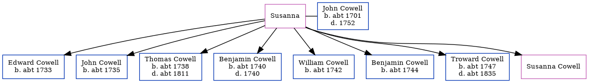

Susanna Cowell
[ Home ] | [ Calendar ] | [ Surnames Index ] | [ Census Index ] | [ Family History ]Susanna was the 5 times great-grandmother of Nigel Horne and had 8 children with John Cowell: Edward, John, Thomas, Benjamin, William, Benjamin, Troward and Susanna.
Children
- Edward was born c. 1733
- John was born c. 1735
- Thomas was born c. 1738
- Benjamin was born c. 1740
- William was born c. 1742
- Benjamin was born c. 1744
- Troward was born c. 1747
Family Tree
Generated by ged2site. Last updated on Jun 11, 2024